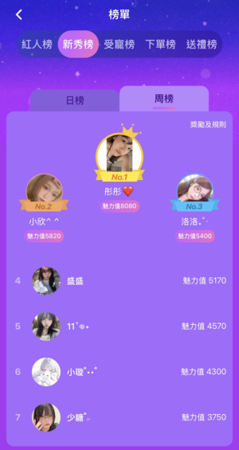

林瑀彤
- 中原大學資訊管理學系
- 生日:95/04/19
- 居住地:桃園市
- #INFP
正是因為沒有翅膀
人才會尋找飛翔的方法
關於我
個性：介於內向與外向之間，具備高度敏感性與豐富的內心世界。在陌生的情境中，我傾向於觀察與謹慎評估；然而，一旦對環境感到熟悉或對事物產生熱忱，我便會展現出外向、活潑並主動參與的一面。
人格：INFP—— 對價值感極為敏感，擁有細膩的情緒與強大的共感能力。正因為這種高敏感特質與完美主義的驅動，我的行動力強，傾向於將事情打磨到心裡覺得「對」為止才會放下，展現出對品質的堅守與執著。
興趣：我喜歡打電動與唱歌，打電動讓我很早就熟悉電腦環境，也培養了快速理解介面與找解法的能力；唱歌則是我調節情緒與維持心情穩定的方式，也是我表達情緒的一種出口。
專業技能
CSS
具備基礎網頁排版能力，能應用標準 CSS3 屬性，並了解 Flexbox 的基本原理及應用。
HTML
熟悉網頁結構的編寫，能正確使用常見的 HTML 標籤，並編寫符合基本語義化(Semantic)的結構。
Java
掌握基礎語法結構，能理解並實作初階的物件導向程式設計概念，用於課程作業及練習。
Python
具備基礎程式邏輯能力，能撰寫入門級別的腳本，並學習應用於簡單的資料處理和自動化任務。
個人經歷
2022年-府中搞什麼鬼(林家花園)
這是高二時期參加的校外大型表演活動。 由於是首次在校外，而且還是林家花園內部，面對一堆不認識的陌生觀眾進行正式演出，當時感到超級緊張，但同時也非常興奮。 這場活動是我首次走向校外實戰舞臺的里程碑，挑戰了我的舞臺表現力與心理素質。 這是一次難忘的回憶，讓我提早體驗到專業表演的氛圍，並學習如何在壓力下維持表演水準。
2022 年 10 月 22 日
牛排館
這是我的第一份打工，雖然工作環境存在時薪與勞健保爭議，但這段經歷成為初出茅廬的我的重要磨練期。 面對同期同事愛來不來找我代班、工作隨便的問題，和後面菜鳥同事鬧出的小烏龍事件，我練就了獨立完成任務的能力和危機善後能力。 同時，透過與長輩客人和店長溝通，有效提升了我的交際溝通技巧，從中獲得了寶貴的服務業基礎經驗。
2022 年 8 月 - 2023 年 2 月
7-11店員
因缺乏經驗且搭班同事缺乏耐心瘋狂精神轟炸，這份工作讓我面臨極大的壓力。 這份短暫的經歷主要訓練了我的高抗壓性、在極端壓力下仍須完成任務的心理調適能力，也警醒我工作環境與團隊合作氛圍對工作效率與身心健康的巨大影響。 店內其實也有一些背後耳語他人的狀況，讓我明白在職場上應保持專業的公私分明，對別人太口不擇言吃虧的是自己。
2023 年 3 月 - 2023 年 5 月
品鼎殿日式壽喜燒
這是第一次接觸高檔餐飲業，公司具備正式嚴謹的SOP、完善的薪資與福利制度。 不只是第一個有簡短面試的工作，也是我第一份上班會化妝的工作，而且也因為是學測後找的工作，有比較充裕的時間都可以拿去打工，上面都是只有上假日班，這一份是一整個禮拜排班制PT，讓我體會到正式職場的專業規範。 工作期間，我發現注重個人儀表得體能獲得客人更友善的對待與小費。 同時，面對意見調查表與績效獎金制度帶來的業績壓力，培養了我的目標導向服務意識與持續改進的動力，是體會正式職場氛圍的愉快經歷。
2024 年 4 月 - 2024 年 10 月
遊戲陪玩
這份工作極度磨練了我的客戶服務態度與社交韌性。
雖然我只做沒多久，但我覺得是所有服務業裡最辛苦的，跟餐飲711那種服務業累的地方不一樣，雖然不用肉體勞動，但是超級耗費精力。
而且因為我也不是甚麼實況主、網紅之類的，基本上你要學的是如何經營與宣傳自身的技巧，怎麼留住客人也是一大難點。
他們陪玩網站也有一個自己的小圈圈，你要怎麼混入其中讓大家熟悉你，增加自己的知名度也是一個很重要的能力。
而且我覺得做這種臉皮要很厚，很像業務，你要很敢跟別人交際，過程中會遇到各式各樣的怪人真的都有，怎麼跟不同的人溝通是真的很難，一不小心可能就惹怒老闆，培養了我的社交膽識和靈活溝通能力。
那時候也是當一個里程碑在做，憑藉高效接單，曾在一週內登上新秀榜單第一名，展現了強大的市場敏感度與執行力。

新秀榜單
2025 年 8 月 - 2025 年 9 月
獎狀
113學年度第一學期書卷獎
113學年度系排一
2022萬能科大全國創意APP行銷比賽佳作